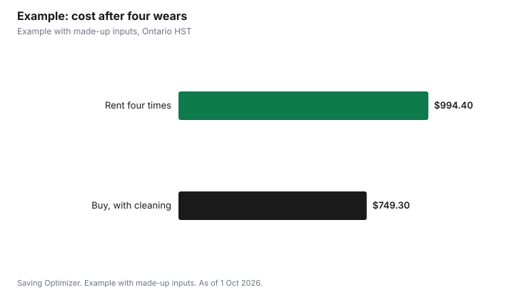

Weddings · Canada
Wedding Suit or Tux: Rent or Buy in Canada? Break-Even, Tailoring and Group Rentals

Rent a suit or tux for your wedding if you need a specific formal look once, if the whole wedding party must match, or if you are short on time; buy if you will wear it again enough times to pass the break-even point, which was about three wears in the made-up example below. Compare like with like: a rental price may or may not include the shirt, shoes and accessories, and a purchase needs tailoring. In Ontario, add 13% HST to both. If you order a suit, Ontario's Consumer Protection Act lets you ask for a refund if it arrives more than 30 days after the promised date, but leave far more margin than that before the wedding.
Key takeaways
- Rent for a one-time formal look or a matched wedding party.
- Buy if you will wear it again; tailoring is extra.
- Compare total costs including shirt, shoes, accessories and tax.
- Ontario HST is 13% on rentals, suits and tailoring.
- Check late-return and damage fees on rentals.
- Example with made-up inputs: break-even by number of wears.
What rentals include
| Item | Ask |
|---|---|
| Jacket and trousers | Included in the base price? |
| Shirt, vest, tie or bow tie | Included or extra? |
| Shoes, cufflinks, pocket square | Included or extra? |
| Measurements | Deadline for the wedding party to be measured |
| Fitting | Is a try-on fitting included before pickup? |
| Pickup and return | Dates and times; late fees |
| Damage | Damage waiver cost and what it covers |
| Group offers | Any credit for the couple when the wedding party rents |
Buying a suit you will wear again
A suit in a dark, plain colour can work at other weddings, interviews, funerals and work events. A tuxedo is worn less often, so buying one makes the most sense if you attend black-tie events regularly. Fit matters more than brand: a well-tailored mid-range suit looks better than an expensive one that does not fit. Ask the store whether basic hemming is included, and what alterations they recommend.
Tailoring
Tailoring for a purchased suit can include hemming trousers, adjusting the waist, shortening sleeves and taking in the jacket. Ask for a written quote and a pickup date at least a week before the wedding, and bring the shoes you will wear. If the suit was bought online, take it to a tailor right away so there is time to exchange it if it cannot be fitted.
Group rentals
Group rentals make matching simple, which matters for photos. The trade-off is the measurement process: every member has to be measured by the deadline, including out-of-town members who may use a partner store or self-measure. A common alternative is to ask the wedding party to wear their own dark suits with matching ties or pocket squares that the couple buys, which can cost less in total and gives everyone something they keep. Decide who pays early and say so in writing; the related formal outfits guide covers budget options for the wedding party.
Who pays
There is no fixed rule on who pays for the wedding party's outfits. Some couples cover rentals as a thank-you, some ask each member to pay, and some split the difference by paying for accessories. Whatever you choose, tell the wedding party before they commit, give them the total including tax, and say who pays for late returns or damage. If cost is a concern for anyone, the own-suit option with matching accessories keeps the look consistent without a rental bill.
Care and storage
For a purchased suit, follow the care label, hang it on a shaped hanger in a breathable bag, and dry clean only when needed. Steam out creases instead of pressing often. Keep the receipt and any tailoring slips; if a seam fails soon after the wedding, the store or tailor may fix it. For a rental, keep the garment bag, hanger and every accessory together so nothing is missing at return, and check pockets before handing it back.
Rights, duty and returns
- Ontario's Consumer Protection Act: an ordered product must be delivered within 30 days of the promised delivery date or you can ask for a refund; if you keep the late item, you lose that right.
- Misrepresentation, such as describing a product as a quality or model it is not, lets you withdraw from the contract within one year.
- There is no general cooling-off period for retail or rental contracts in Ontario; the store's return and cancellation policy applies.
- The CBSA says items mailed from outside Canada worth more than CAN$20 face duty, GST or HST and any PST on the full value.
Timing
| When | Task |
|---|---|
| 3 to 4 months before | Choose the style; book group rentals or buy suits |
| 2 to 3 months before | Wedding party measured; tailoring starts on purchased suits |
| 2 to 4 weeks before | Fitting or try-on; final adjustments |
| 1 to 3 days before | Rental pickup; try everything on in the store |
| 1 to 2 days after | Return rentals on time |
Break-even: rent or buy
Break-even is the number of wears at which buying and tailoring costs the same as renting each time. Formula: break-even wears = (purchase price + tailoring) divided by rental price. If you expect to wear it more often than that, buy. Include cleaning for a bought suit and any damage waiver on rentals. Be honest about future wears: count only events you expect in the next few years, and remember that body changes or style changes can cut a suit's useful life.
Example with made-up inputs
These numbers are an example with made-up inputs, apart from Ontario's 13% HST. A rental costs $220 with shirt and accessories; with HST, $248.60 per wear. A dark suit costs $480 plus $90 tailoring and a $40 shirt and tie, $610, or $689.30 with HST. Break-even is $689.30 divided by $248.60, about 2.8 wears. If the groom attends two other weddings and one formal work event in the next few years, that is four wears: renting would cost $994.40 against $689.30 for buying plus a made-up $60 in dry cleaning, a saving of $245.10. For a tuxedo worn only on the wedding day, renting wins.
| Wears | Rent each time | Buy (plus cleaning after the first) |
|---|---|---|
| 1 | $248.60 | $689.30 |
| 2 | $497.20 | $709.30 |
| 3 | $745.80 | $729.30 |
| 4 | $994.40 | $749.30 |

Common mistakes
- Comparing a rental base price to a full purchase without accessories.
- Leaving measurements for the wedding party too late.
- Skipping the try-on before leaving the rental store.
- Returning rentals late.
- Buying a trendy colour you will not wear again.
Related: wedding dress costs and 2027 wedding budget.
Sources
- Government of Ontario, Your rights under the Consumer Protection Act, ontario.ca, as of 1 Oct 2026.
- Canada Border Services Agency, Importing by mail or courier: determining duty and taxes owed, as of 1 Oct 2026.
- Canada Revenue Agency, GST/HST rates, canada.ca, as of 1 Oct 2026.
- Rental, suit, tailoring and cleaning amounts in the example are made-up inputs.
Frequently asked questions
Is it cheaper to rent or buy a wedding suit?
It depends on how often you will wear it. Divide the purchase price plus tailoring by the rental price; if you will wear it more times than that, buying is cheaper.
What does a tux rental include?
It varies. Ask whether the shirt, vest, tie, shoes and accessories are included, and about fittings, pickup and late or damage fees.
Is HST charged on suit rentals in Ontario?
Ontario's HST rate is 13%. Ask whether the quote includes tax.
What if my ordered suit arrives late?
Ontario's Consumer Protection Act says an ordered product must be delivered within 30 days of the promised date or you can ask for a refund, unless you keep it.
Can I cancel a tux rental in Ontario?
There is no general cooling-off period; the store's cancellation policy applies.
Do I pay duty on a suit ordered from abroad?
The CBSA says mailed items worth more than CAN$20 face duty, GST or HST and any PST on the full value.
Researched and drafted with AI assistance and fact-checked against official Canadian sources. How we create content.